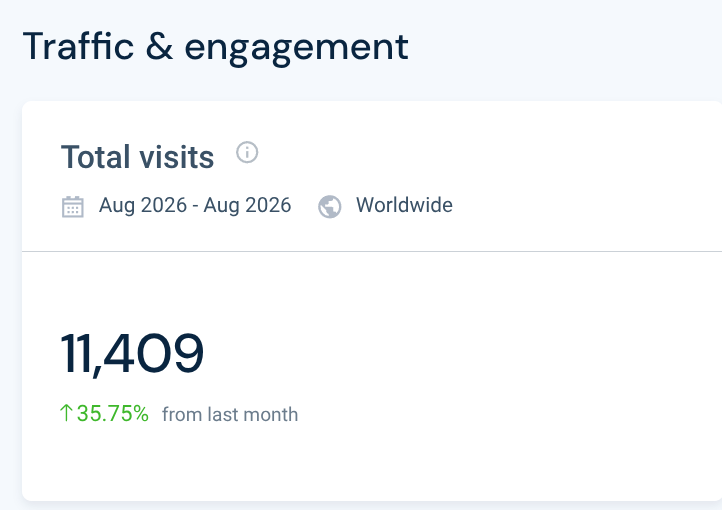
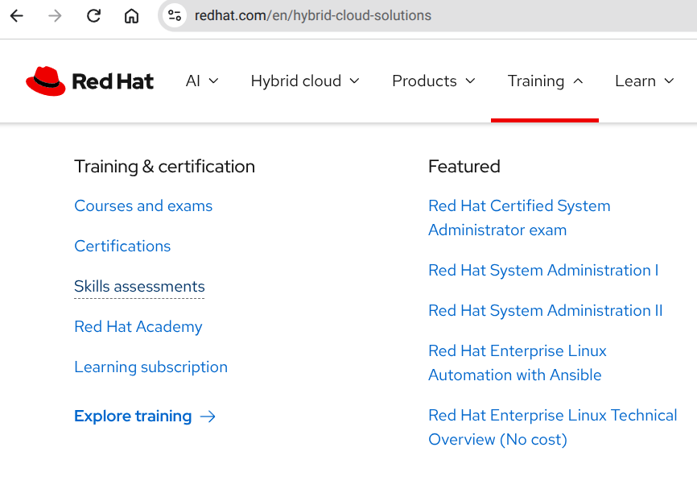

01 · End customers
Needed to build custom assessments, not one-size-fits-all templates. A generic path could not match their stack or roles.
Skills Assessment · Alt brief · compare with case-study-redhat.html
Enterprise clients teams could finally see what they were missing and how to get more value from their cloud solutions, while Red Hat’s sales team could walk into customer meetings with real data and proof instead of just a pitch.


03 · The problem
I led UX research for Skills Assessments, working across Sales, Marketing, and Curriculum. The obvious tension was competing priorities: Sales wanted conversion, Marketing wanted engagement, Curriculum wanted the content to sit at the center. That was not the real failure.
The real failure was that none of those requirements described the people who would take, assign, or maintain an assessment. We were at risk of shipping a learning-path tool optimized for internal scorecards, while enterprise clients still could not put their cloud subscriptions to work.
Curriculum had already locked a long requirements list. Those lines described what each team needed to report up, not what a customer, a manager, or a developer needed to finish the job. If we designed to that list, we would balance stakeholders and still miss the user.
Survey of B2B and B2C learners, not a guess about “users want training.”
04 · Research & discovery
The decision I drove was to put evidence in front of the brief. I facilitated stakeholder workshops, ran user surveys, and interviewed the people who would take, assign, and maintain assessments. The goal was simple: make sure what we shipped matched what users needed, not what was already written down.
That work surfaced three needs the spreadsheet had never named. The personas that followed, technical managers, developers, and internal Red Hat users, were hypotheses we used to structure journeys, then tested.
Needed to build custom assessments, not one-size-fits-all templates. A generic path could not match their stack or roles.
Needed centralized reporting to see group assessment results. Without a team view, managers could not act on skill gaps.
Needed better technical tools to keep up with the high volume of assessment maintenance. Manual authoring could not scale the catalog.
Sales, Marketing, and Curriculum still had real goals. Research gave them a shared picture of users so those goals could sit on top of actual need, not instead of it.


Need full visibility of team skills to spend budget on learning instead of unused services.
Need assessments that match the work they actually do, not a generic certification path.
Need a report that helps a technical manager choose a learning subscription over more Red Hat services.
These were not finished truths. They were bets we took into flows, then into usability tests.

05 · The key insight
The pivot was to treat the spreadsheet as a hypothesis, then replace it with what research actually found: custom assessments for customers, centralized group reporting for corporate users, and technical tools so developers could maintain volume. Conversion, engagement, and content still mattered. They just could not be the spec.
06 · Process
I worked in the open with the 12-person engineering team. Each artifact was a conversation: what is feasible, what is missing, what the internal flow actually has to do.


UI was not a rebrand. I mapped the product onto Red Hat’s existing design system so the experience felt like a product they already trusted.


07 · Validation & outcome
I ran usability sessions with two focus groups against the prototype: structured tasks plus open questions. The main failure was not the report. It was the filter. People could not map their interests to an assessment without friction. We simplified the interaction and the layout before engineering locked it.
What held up: the skill-gap report and the internal authoring path. Collaboration with engineering meant those pieces were already technically real, not slideware.


The catalog was never the product. The diagnosis was. Shipped June 2023 · still live
Visit Skills Assessment live →08 · Reflection
The process broke down where I assumed a B2C assessment was the center of gravity. We almost underbuilt the internal flow, the path Sales, Curriculum, and developers actually needed to keep the product alive. I fixed it by putting that journey on the same map as the learner, then teaching stakeholders how to read the research so they would fund it. Next time I would test the sales-deck report with Account teams before investing in catalog polish. The 15% sales lift and 10,000 monthly visits are what that correction bought. The cost was time: months spent convincing rooms that a spreadsheet of requirements was not the same thing as a user need.
{kind=link}